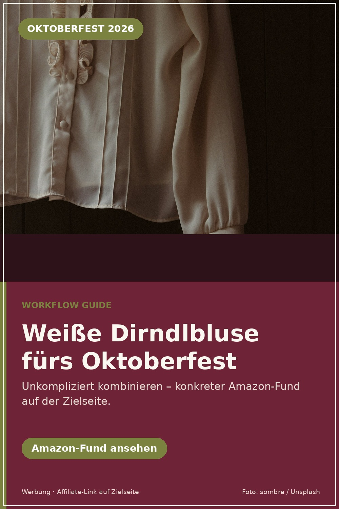
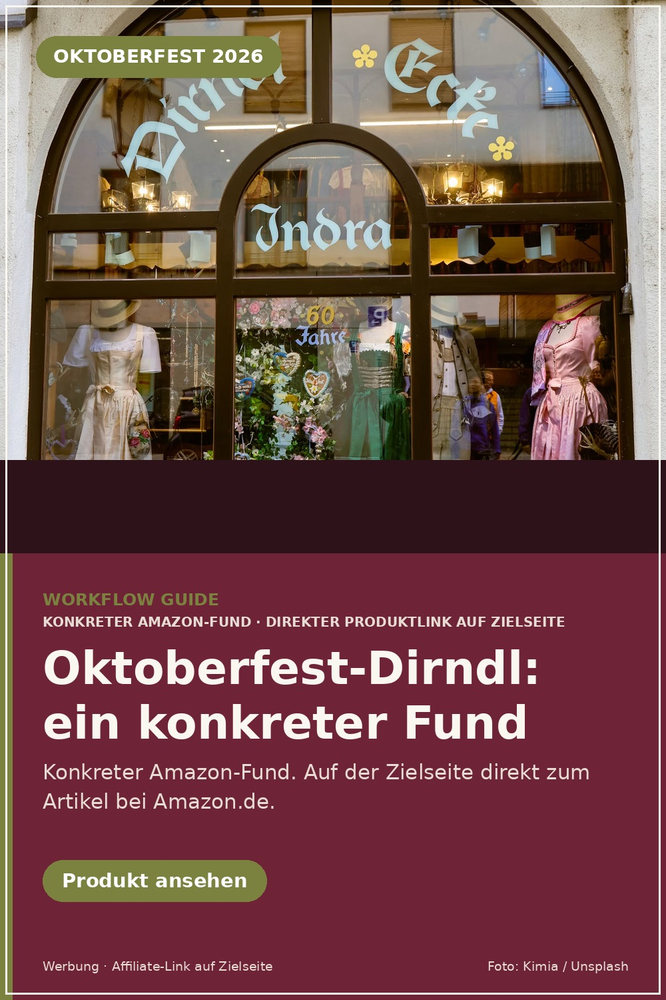
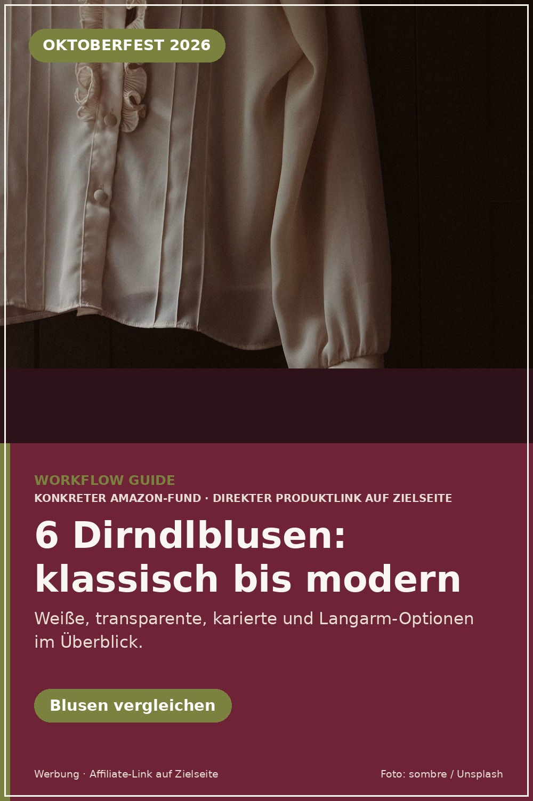
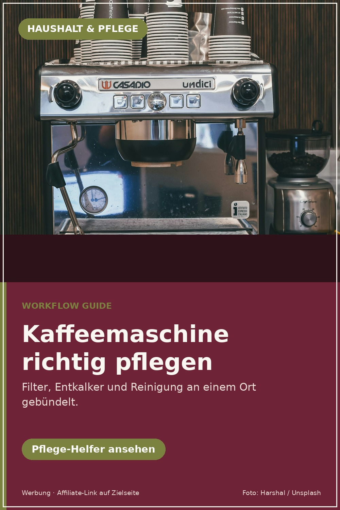
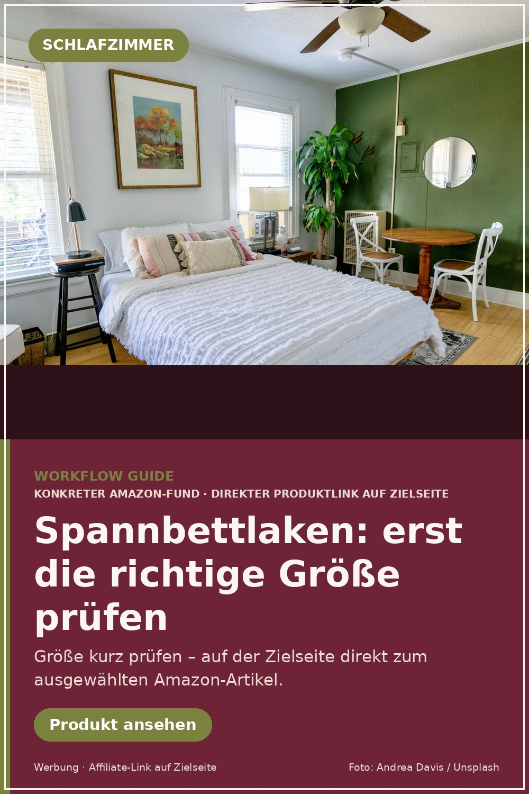
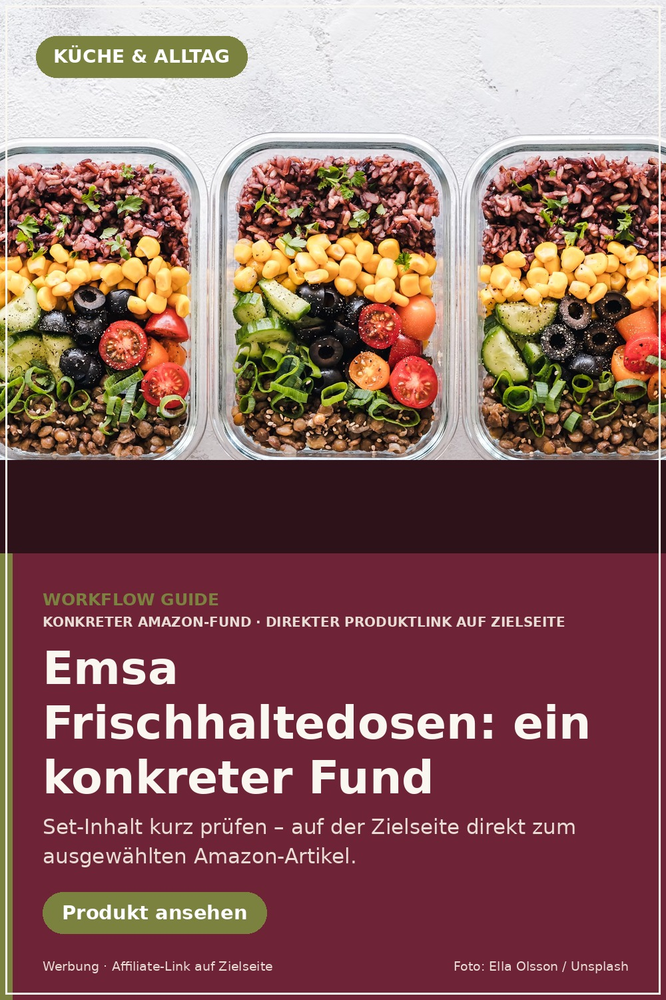
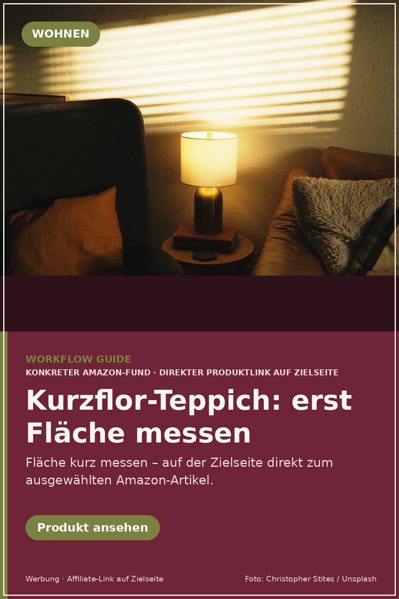

C145 · Weiße Dirndlbluse fürs Oktoberfest
Produkt: P001 · 1000 × 1500 px · Template PY_RENDER_V1
Diese Seite ist nicht für Suchmaschinen bestimmt. Hier siehst du die vorbereiteten Affiliate-Pins und ihre Zielseiten in einem Durchgang. Veröffentlicht wird erst nach Freigabe.

Produkt: P001 · 1000 × 1500 px · Template PY_RENDER_V1

Produkt: P026 · 1000 × 1500 px · Template PY_RENDER_V1

Produkt: P022 · 1000 × 1500 px · Template PY_RENDER_V1

Produkt: P010 · 1000 × 1500 px · Template PY_RENDER_V1

Produkt: P006 · 1000 × 1500 px · Template PY_RENDER_V1

Produkt: P018 · 1000 × 1500 px · Template PY_RENDER_V1

Produkt: P013 · 1000 × 1500 px · Template PY_RENDER_V1